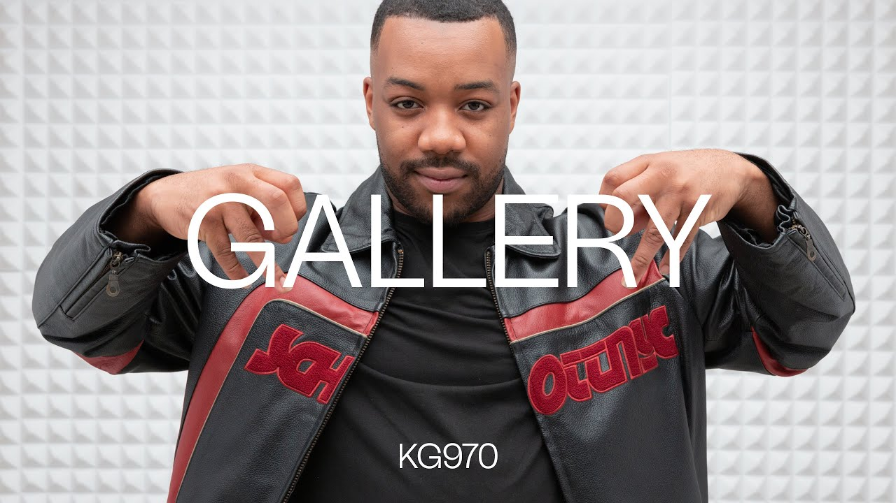
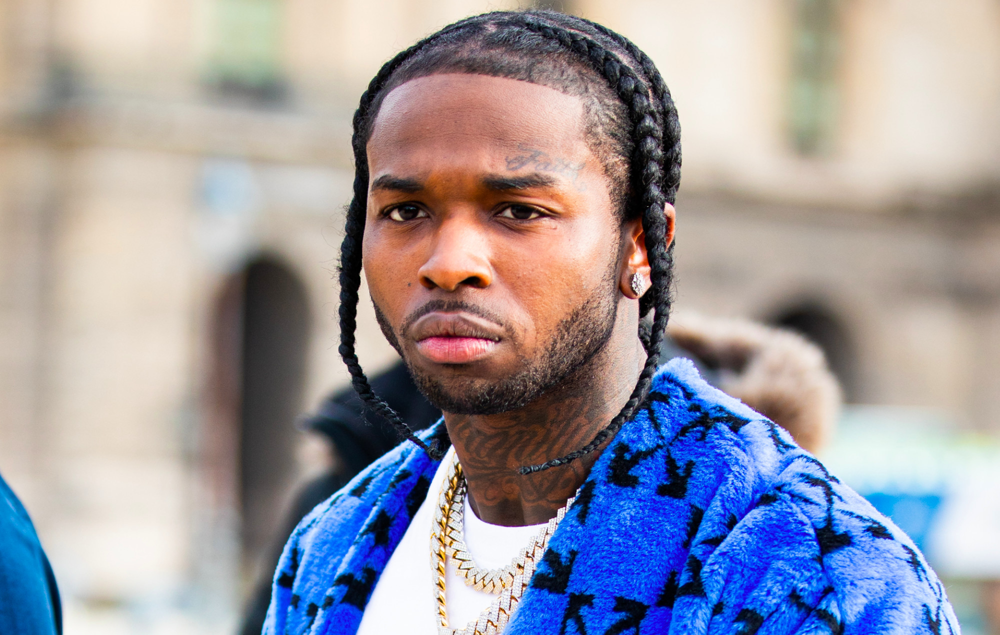

El drill español despega: artistas que debes conocer
16 de abril de 2025
El drill, nacido en Chicago y popularizado en Londres, tiene ya una escena española muy activa. Artistas de Madrid y Barcelona están creando un sonido propio dentro del género.

Nombres como Neo Pistea o Recycled J han abierto el camino. Ahora una nueva generación llega con propuestas más oscuras y letras más directas, muy influenciadas por la escena británica.
Pop Smoke sigue presente: su legado tres años después
9 de abril de 2025
El artista neoyorquino que popularizó el Brooklyn drill sigue siendo una referencia para toda una generación. Su música no ha dejado de sonar desde su fallecimiento.

Su discográfica ha anunciado una edición especial de su álbum debut con temas inéditos. Además, varios artistas actuales han declarado en entrevistas que Pop Smoke es su mayor influencia.
Central Cee: el drill británico en lo más alto
2 de abril de 2025
El rapero londinense es actualmente uno de los artistas de drill más escuchados del mundo. Su mezcla de melodía y letras duras ha conectado con millones de oyentes en todo el planeta.
Central Cee actuará en varios festivales europeos este verano, incluido uno en España. Su colaboración con Drake el año pasado le dio una proyección internacional que pocos artistas del género han logrado.